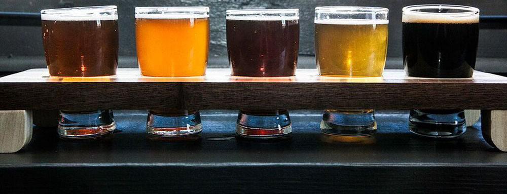

Beers On Tap
Topsy Turvy Black IPA
- Dark, hoppy, spiced
-
- 5.5% ABV
- 85 IBU
- The Upside Down Brewing
- Durham, NC
- 10oz. - $4
- 16oz - $6
Dragon's Breath Amber Ale
- Cinnamon gives this amber ale a kick!
-
- 5% ABV
- 55 IBU
- The Upside Down Brewing
- Durham, NC
- 10oz. - $5
- 16oz - $7
Event Horizon Stout
- Dark, malty, flavorful
-
- 7% ABV
- 30 IBU
- The Upside Down Brewing
- Durham, NC
- 10oz. - $5
- 16oz - $8
Gold Doubloon IPA
- Bright, bitter, and bold
-
- 4% ABV
- 75 IBU
- The Upside Down Brewing
- Durham, NC
- 10oz. - $4
- 16oz - $6
Abyssal Imperial Stout
- The darkest of dark
-
- 8.5% ABV
- 40 IBU
- The Upside Down Brewing
- Durham, NC
- 10oz. - $6
- 16oz - $8
Pisswasser IPA
- Don't buy this!
-
- 1.5% ABV
- 115 IBU
- The Upside Down Brewing
- Durham, NC
- 10oz. - $1
- 16oz - $3
Beer Club
Arriving in a 22-ounce brown bomber, this ale clocks in at 62 IBUs, which tells us there is a substantial amount of hops here, and a hefty 7.9 percent alcohol by volume speaks for itself. Decent amount of foam that holds together to form a chunky-looking head with good retention. Crystal-clear copper hue. Juicy aroma, pear-like fruity esters, rosewater, soft herbal tones and a hint of spicy alcohol in the back. Full-bodied with a syrupy mouthfeel, very smooth and creamy. Loads of hop oil up front, herbal, almost like nectar. Really juicy with an intermingled fruitiness of mango, pear and melon. Then the fruity esters show their real source with a warmth and spice of balanced alcohol; and bitterness has a go on the taste buds with a semi-puckering dryness. The malt character drops in fashionably late with undertones of toasted biscuit. The finish is a tad sweet, though if the hops fade with a bit of age and the alcohol goes a bit vinous, then, with time, this beer will turn into a different beast altogether.
About Us
Body is light, and the mouthfeel smooth. The palate gathers apple peel, light clove notes and a thin sweetness that's touched with caramel. In the middle, ripe and juicy fresh wheat malt with pear edge, while a husky, grainy, wheat twang livens things up. Suggestions of bubblegum are noted. There's very little bitterness, but a slight lemony sourness, banana pith and light hop leaf character that, combined, increase the perceived bitterness. Yeast is rather neutral, a bit chalky. Some medicinal phenols show through toward the finish. Finish dries the palate, with a lingering wheat and barley husk.
Cloudy, it's unfiltered and also contains yeast in the bottle, dirty straw blonde, topped with a thin, dissipating white foam lace. Husky with a light peach aroma. Light-bodied, a bit coarse around the edges, and a creamy carbonation. Tart and juicy peach flavors, nectarine skins, and Granny Smith apples flavors offer a lively citric smack on the palate. It's a lightly hopped beer, so any hop character or bitterness is masked by the tartness, and there's virtually no sweetness. Crisp as hell, and the dryness cuts to the bone. And after all of the commotion, there's a thin malt base left behind, with a touch of wheat and sourness, in a surprisingly clean and more-ish finish.